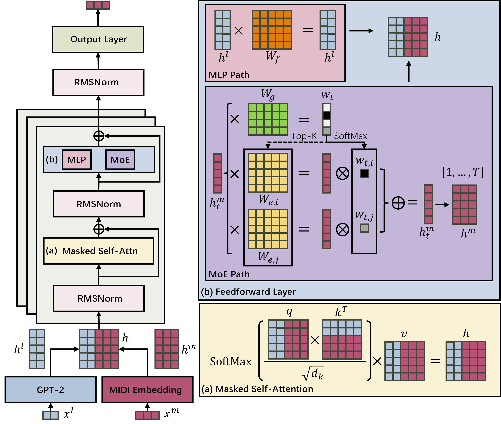

Text-to-MIDI generation offers editable and hierarchical control over symbolic music generation. Previous approaches either convert text into a limited set of musical attributes and generate music based on these attributes, which limits semantic controllability, or use end-to-end models that map text directly to music without deeply aligning the features of both modalities, often resulting in a lack of structural coherence and mismatches in key, meter, and tempo. We propose MIDILM, which addresses these limitations by employing text conditioning with a dual-path decoder that processes textual and musical information through separate feedforward paths following a shared masked self-attention mechanism. On the MidiCaps benchmark, MIDILM outperformed the strongest baseline, with relative improvements ranging from 6.07% on CLAP to 144.77% on TB across semantic alignment and structural metrics. These gains confirm its ability to enhance both semantic controllability and structural coherence. Collectively, we expect that MIDILM will serve as a useful reference framework for future investigations into controllable and structurally faithful cross-modal music generation.

The following samples were generated from text prompts using MidiLM. Click each player to listen to the rendered audio.
| A melodic pop song with electronic elements, featuring acoustic guitar, piano, synth brass, clean electric guitar, and harmonica, all contributing to a festive Christmas atmosphere. |
| A melodic electronic song with a spacey and dreamy atmosphere, featuring synth strings, drums, electric bass, glockenspiel, and a brass section. |
| A cheerful pop Christmas song in D minor, featuring electric and acoustic guitars, trumpet, trombone, and pan flute. |
| A melodic and energetic rock song with electronic elements, featuring distorted guitars, electric bass, synth strings, alto saxophone, and synth voice. |
| A melodic classical and electronic piece featuring piano, violin, and cello, set in the key of G major with a fast tempo of 144 bpm. |